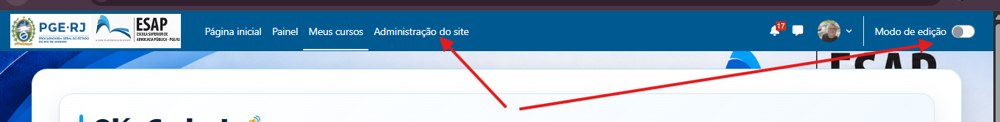

MANUAL PRÁTICO
TREINAMENTO MOODLE
Estrutura mínima para criação e administração de turmas
Objetivo
Capacitar a equipe para montar uma turma funcional no Moodle:
categoria, curso, coorte, usuários, atividades, presença e personalização visual.
ESAP • PGE-RJ
Material operacional de treinamento interno
Visão Geral do Treinamento
O treinamento deve ser executado no ambiente Moodle da ESAP/PGE-RJ. A sequência abaixo evita retrabalho e facilita a conferência das etapas.
Competências mínimas
- Criar categoria e curso no local correto.
- Criar coorte e utilizar sua identificação no processo de importação.
- Transformar uma relação de alunos em CSV UTF-8 e importar os usuários.
- Adicionar um usuário manualmente e alterar sua senha.
- Associar usuários/coorte ao curso.
- Adicionar e configurar Presença (Attendance) e uma Tarefa.
- Disponibilizar um PDF na Tarefa e registrar falta/presença.
- Alterar a imagem do card da turma e inserir imagem em bloco de texto/HTML.
Acessar a Administração do Site e Ativar o Modo de Edição
O ponto de partida para as operações administrativas é o menu Administração do site. O modo de edição deve ser ativado sempre que for necessário alterar elementos visuais ou atividades do curso.

Figura 1 — Administração do site e chave Modo de edição destacadas na barra superior.
https://esap.pge.rj.gov.br/ e entre com uma conta que possua as permissões necessárias.Criar a Categoria da Turma
As categorias organizam os cursos. Antes de criar um curso, confirme em qual categoria ele deve ficar.

Figura 2 — Gerenciar cursos e categorias / Criar nova categoria.
Preenchimento mínimo
| Categoria pai | Selecionar conforme a estrutura oficial da ESAP. |
| Nome da categoria | Utilizar o padrão definido para o treinamento/turma. |
| Número de identificação | Preencher se o padrão interno exigir. |
| Descrição | Opcional, mas recomendada quando houver várias turmas semelhantes. |
Criar o Curso Dentro da Categoria
Depois de criada ou selecionada a categoria correta, crie o curso que representará a turma.

Figura 3 — Criar novo curso dentro da categoria desejada.
Configurações essenciais do curso
| Campo | Orientação |
|---|---|
| Nome completo do curso | Ex.: Capacitação Moodle - Turma 01. |
| Nome breve | Ex.: CAP-MOODLE-T01. |
| Categoria do curso | Confirmar a categoria correta antes de salvar. |
| Visibilidade | Deixar visível apenas quando o curso estiver pronto para os alunos. |
| Data de início | Definir a data real da turma. |
| Resumo do curso | Inserir uma descrição curta e objetiva. |
| Imagem do curso | Adicionar a imagem que aparecerá no card da turma. |
Criar a Coorte e Preparar o Arquivo CSV
Se o CSV for utilizar o campo cohort1, a coorte deve existir antes da importação para que o vínculo seja reconhecido corretamente.
4.1 Criar a coorte
CAP-MOODLE-T01.4.2 Converter a relação em PDF para CSV
Extraia os dados do PDF para uma planilha, revise cada coluna e salve como CSV em UTF-8. No ambiente mostrado nas capturas, o delimitador configurado é ponto e vírgula (;).
| username | firstname | lastname | password | cohort1 | |
|---|---|---|---|---|---|
| joao.silva | João | Silva | joao.silva@exemplo.br | Temp@123 | CAP-MOODLE-T01 |
| maria.souza | Maria | Souza | maria.souza@exemplo.br | Temp@123 | CAP-MOODLE-T01 |
Antes de importar, conferir:
usernamesem espaços e sem duplicidade- Nome e sobrenome separados corretamente
- E-mail válido/único conforme a política do ambiente
- Senha temporária conforme a política de segurança
cohort1com o ID exato da coorte- Arquivo salvo em CSV UTF-8 com o delimitador correto
Carregar a Lista de Usuários por CSV
A importação em lote é usada quando há vários participantes. Sempre revise a pré-visualização antes de confirmar a criação dos usuários.

Figura 4 — Administração do site → Usuários → Contas → Carregar lista de usuários.

Figura 5 — Envio do CSV: confirme o delimitador (;) e a codificação UTF-8.
Adicionar um Usuário Individualmente e Alterar Senha
O treinamento deve incluir pelo menos um cadastro manual para que a equipe saiba tratar inclusões pontuais sem depender do CSV.
Figura 6 — Administração do site → Usuários → Contas → Adicionar um novo usuário.
Cadastro manual
Alteração de senha
Vincular a Coorte ao Curso
Depois de criar os usuários e a coorte, a turma precisa ser vinculada ao curso para que os participantes tenham acesso.
Método recomendado: sincronização de coorte
Validação
- O usuário aparece em Participantes?
- O papel está correto?
- A coorte escolhida é a da turma certa?
- Uma conta de aluno consegue abrir o curso?
Adicionar Presença e Tarefa
A equipe deve saber configurar uma atividade de presença e uma tarefa simples para entrega de material/arquivo.
8.1 Presença (Attendance)
8.2 Tarefa
Disponibilizar PDF na Tarefa e Registrar Falta/Presença
Estas duas operações fecham o fluxo mínimo de uma turma: material/instrução acessível ao aluno e controle de comparecimento.
Inserir um PDF na Tarefa
Registrar falta e presença
Alterar Imagem do Bloco e do Card de Cada Turma
A identidade visual facilita a localização rápida das turmas e reduz erros de operação quando existem muitos cursos semelhantes.
10.1 Imagem do card do curso
10.2 Imagem em bloco
Validação Final com Conta de Aluno
A estrutura só deve ser considerada pronta depois que o fluxo for testado fora da visão administrativa.
Checklist de Avaliação Prática
| # | Evidência / Competência | Conferido |
|---|---|---|
| 1 | Acessou Administração do site e identificou o Modo de edição. | |
| 2 | Criou/selecionou corretamente uma categoria. | |
| 3 | Criou um curso na categoria correta. | |
| 4 | Configurou nome breve, visibilidade, data e imagem do curso. | |
| 5 | Criou uma coorte e definiu seu ID. | |
| 6 | Transformou a relação em CSV UTF-8 com colunas válidas. | |
| 7 | Importou usuários por CSV e conferiu a pré-visualização. | |
| 8 | Adicionou um usuário individualmente. | |
| 9 | Alterou a senha de um usuário. | |
| 10 | Vinculou a coorte ao curso e conferiu Participantes. | |
| 11 | Adicionou/configurou Presença. | |
| 12 | Criou uma sessão e registrou presente/falta. | |
| 13 | Adicionou/configurou uma Tarefa. | |
| 14 | Disponibilizou um PDF corretamente para os alunos. | |
| 15 | Alterou a imagem do card da turma. | |
| 16 | Inseriu imagem em bloco de Texto/HTML. | |
| 17 | Validou o curso com conta de aluno. |